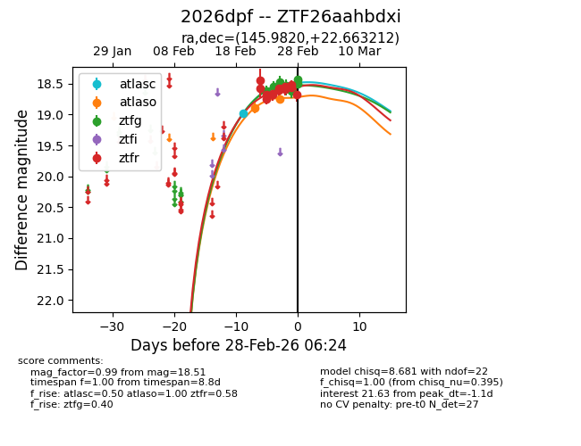
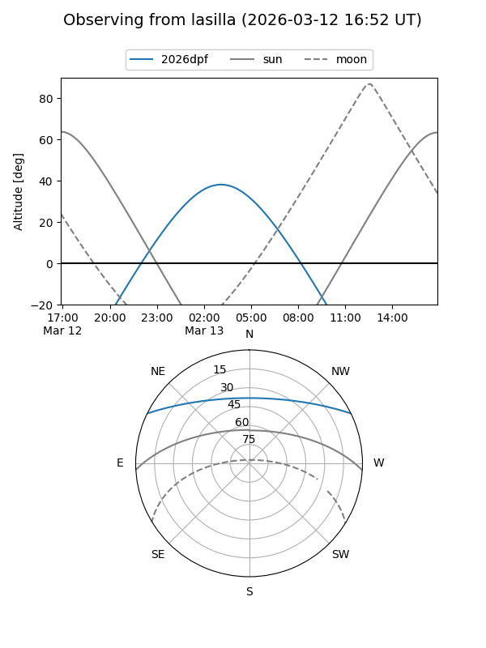
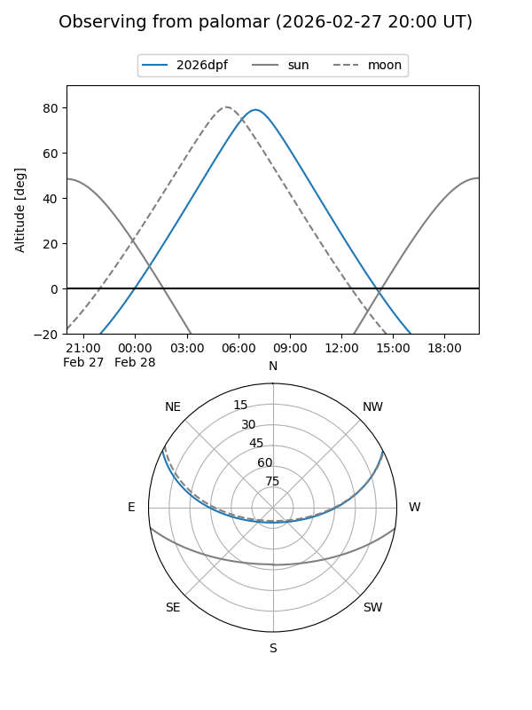
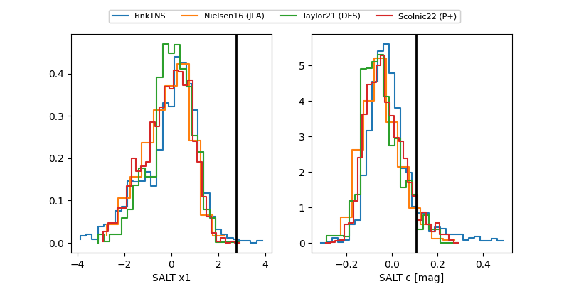

2026dpf
Target 2026dpf at 2026-02-28 06:27
Aliases and brokers:
FINK: link
Lasair: link
ALeRCE: link
TNS: link
YSE: link
alt names
ZTF26aahbdxi (ztf,fink_ztf)
2026dpf (tns,yse)
Coordinates:
equatorial (ra, dec) = 145.9820,+22.66321
equatorial (HMS+DMS) = 09:43:55.67,+22:39:47.56
galactic (l, b) = (208.2383,+47.48352)
Flags:
Photometry:
last atlasc=18.98, atlaso=18.74, ztfg=18.51, ztfr=18.68
1 atlasc, 2 atlaso, 11 ztfg, 13 ztfr detections
Lightcurve

Visibility


Additional plots
